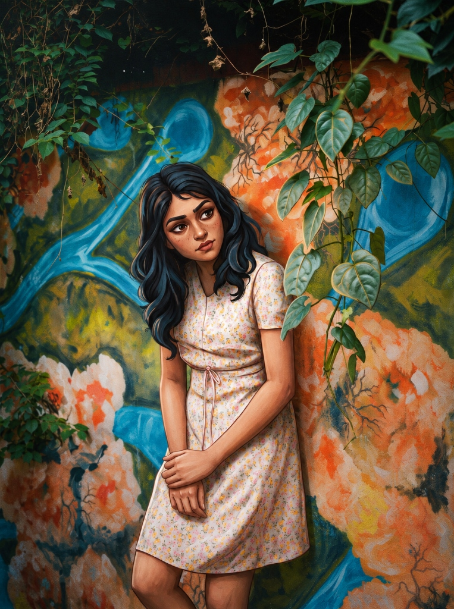

PORTFOLIO
2026

design Print &
Digital
Introduction
I am Anisha Anil, a graphic designer from Pathanamthitta, Kerala, India. With a hands-on command of Adobe Photoshop and a background in Animation, I craft expressive posters, commercial ad campaigns, print layouts, and dark-fantasy matte paintings.
Combining a commerce foundation with visual storytelling lets every project balance audience psychology, compositional rhythm, and tactile craft.
Disciplines
- Poster Design · Folklore, music & film tributes (09 works)
- Advertising & Campaigns · Concept product & food ads (08 works)
- Print Media Design · Fine-dining menu & editorial hierarchy (01 book)
- Digital Art & Matte Painting · Lighting & compositing (03 works)
Education
Vismayasmax Animation
B.Sc in Animation | 2023 – 2026
Compositing, lighting & visual storytelling
Sree Narayana Guru College of Advanced Studies (SNGCAS)
B.Com in Co-operation | 2020 – 2023
Business strategy & market dynamics
Softwares
Languages
Malayalam (Native) · English (Professional) · Hindi (Working)
GRAPHIC POSTERS
Tools used: Adobe Photoshop
Chapter 01 (09 works) — folklore, music tributes, film concepts, and typographic storytelling built in bold A4 and 4:5 frames. Click any poster to inspect details & colour story.
ADS & CAMPAIGNS
Tools used: Adobe Photoshop
Chapter 02 (08 works) — concept campaigns pairing scale-illusion photo manipulation with editorial 3D product breakouts.
DIGITAL ART
Tools used: Adobe Photoshop
Chapter 04 (03 works) — dark-fantasy photo manipulation and matte painting where volumetric light, mist, and colour temperature lead the eye.
PRINT DESIGN
Tools used: Adobe Photoshop · 300 dpi Pre-Press
Chapter 03 (01 Menu Book) — tactile fine-dining print craft designed for linen bookcloth, vintage cartouche framing, and ornamental price hierarchy.
CASE STUDIES
Palette · Typography · Callouts
STUDIO CARDS
Identity · Tactile Print
ANISHA ANIL
Graphic Designer
anishanil708@gmail.com
+91 96567 55464
Pathanamthitta, Kerala, India